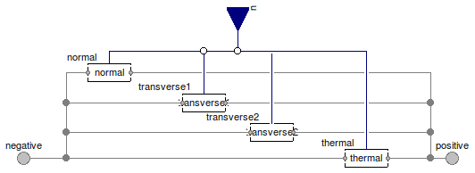

Table of Contents
- User's Guide
- Conditions
- Assemblies
- Regions
- Subregions
- Connectors
- Characteristics
- Units
- Quantities
- BaseClasses
Download
- Latest: FCSys-2.0.zip (**Please check back soon or contact kdavies4 at gmail.com.)

| Name | Description |
|---|---|
| Species | Condition for a pair of faces of a Species model (single-species) |
| Normal mechanical Conditions | |
| Transverse mechanical Conditions | |
| Thermal Conditions | |
| Base classes (not for direct use) |

| Type | Name | Default | Description |
|---|---|---|---|
| Linear momentum | |||
| CurrentAreic | normal | redeclare Normal.CurrentArei... | Normal condition |
| Velocity | transverse1 | redeclare Transverse.Velocit... | 1st transverse condition |
| Velocity | transverse2 | redeclare Transverse.Velocit... | 2nd transverse condition |
| Heat | |||
| Temperature | thermal | redeclare Thermal.Temperatur... | Type of condition |
| Type | Name | Description |
|---|---|---|
| RealInputBus | u | Input bus for external signal sources |
| Face | negative | Negative face |
| Face | positive | Positive face |
model Species "Condition for a pair of faces of a Species model (single-species)" extends FCSys.BaseClasses.Icons.Conditions.Double; // Normalreplaceable Normal.CurrentAreic normal constrainedby Normal.BaseClasses.PartialCondition "Normal condition"; // 1st transversereplaceable Transverse.Velocity transverse1(spec(k=0),final orientation= Orientation.preceding) constrainedby Transverse.BaseClasses.PartialCondition "1st transverse condition"; // 2nd transversereplaceable Transverse.Velocity transverse2(spec(k=0),final orientation= Orientation.following) constrainedby Transverse.BaseClasses.PartialCondition "2nd transverse condition"; // Thermalreplaceable Thermal.Temperature thermal(spec(k(start=298.15*U.K))) constrainedby Thermal.BaseClasses.PartialCondition "Type of condition"; // Note: In Dymola 7.4, the value of k must be specified here instead // of at the lower level (e.g., Thermal.Temperature) so that the spec // subcomponent can be replaced by blocks that don't contain the // parameter k.FCSys.Connectors.RealInputBus u "Input bus for external signal sources"; FCSys.Connectors.Face negative "Negative face"; FCSys.Connectors.Face positive "Positive face"; equation // Normalconnect(u.normal, normal.u); connect(normal.negative, negative); connect(normal.positive, positive); // 1st transverseconnect(u.transverse1, transverse1.u); connect(transverse1.negative, negative); connect(transverse1.positive, positive); // 2nd transverseconnect(u.transverse2, transverse2.u); connect(transverse2.negative, negative); connect(transverse2.positive, positive); // Thermalconnect(u.thermal, thermal.u); connect(thermal.negative, negative); connect(thermal.positive, positive); end Species;